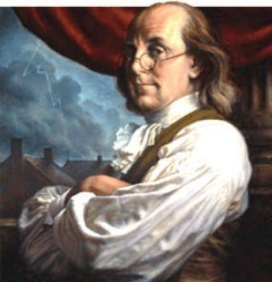

Click here to return to my home page.
Click here
to see more about my hero

Benjimin Franklin was born on January 17, 1706, in Boston Massachusetts. He was the youngest in his family and was one of 15 kids. As he grew up he learned to read in school but soon dropped out at the age of 10. After this he became a printer and futhered his knowledge in reading. Now he is known as one of the founding fathers of the Unided States. He was one of the five men that banded together to write the Declaration of Independence. This was one of his greatest accomplishments and allowed the US to break away from the dictatorship of Britain.
Benjamin Franklin is my hero because he was the man that discovered electricity. Whithout that discovery humanity would have evovled way slower with the form of technology. If we discovered technology even 10 years later we would be way behind where we are today. Thanks to his first steps in the way of electronic technology I am able to play games with friends. Now the way we see the future of the world is with cooler technological dicoveries that will be made such as new cars, new super computers, and maybe even tapping into the memories of humans.